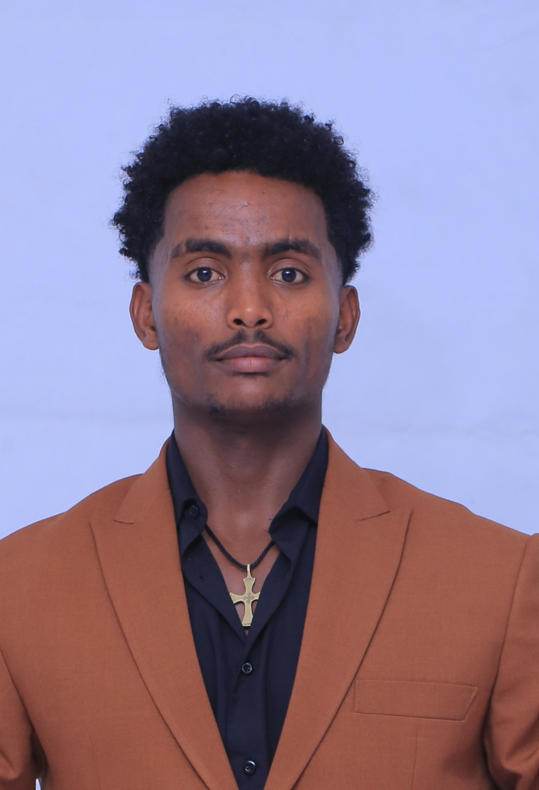

Bachelor of Science graduate in Medical Laboratory Science from Woldia University (CGPA 3.66) and licensed Junior Medical Laboratory Technologist. Former Head of Academic Affairs and Head of Public Relations in the Students' Union, seeking laboratory roles, research fellowships and postgraduate study.

I am Nigus Muleta Mekuriaw, a Medical Laboratory Science graduate of the College of Health Sciences at Woldia University. I completed my Bachelor of Science on June 25, 2026 with a cumulative GPA of 3.66 out of 4.00 and passed the National Exit Examination with 71%. I hold a professional registration and licence as a Junior Medical Laboratory Technologist from the Amhara Regional State Bureau of Health.
My clinical training covered the full range of laboratory work: parasitology, hematology, immunology and serology, clinical chemistry, microbiology, virology, mycology and histopathology. Alongside my studies I served as Head of Public Relations and then Head of Academic Affairs in the Students' Union, co-founded the university's Health Insurance Club, and coordinated with the national Youth Volunteer Service Association.
He is one of the most exceptional students I have encountered.Assefa Sisay (MSc), Head, Department of Medical Laboratory Science, Woldia University
Roles held at Woldia University and in the community.
📚 Exit examination 71% | 295 credit hours | First Class with Distinction
| Term | Semester GPA | Cumulative GPA |
|---|---|---|
| Year 1, Semester 1 (2021/22) | 3.87 | 3.87 |
| Year 1, Semester 2 (2021/22) | 3.77 | 3.82 |
| Year 2, Semester 1 (2022/23) | 3.56 | 3.67 |
| Year 3, Semester 1 (2023/24) | 3.76 | 3.70 |
| Year 4, Semester 1 (2024/25) | 3.55 | 3.66 |
Recognitions and training completed alongside the degree.
Five letters from Woldia University, written between March and September 2026.
Highest recommendation for graduate studies, research fellowships and professional opportunities.
An outstanding candidate for healthcare leadership roles, fellowships or postgraduate study.
One of the most engaged and promising students in his class.
One of the most exceptional students I have encountered.
A well-rounded professional combining clinical excellence with leadership.
Signed letters and original certificates are available on request.